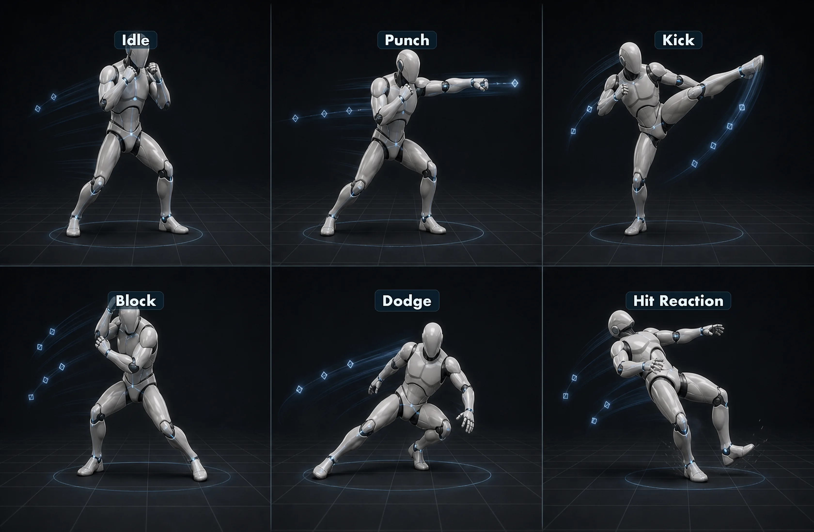
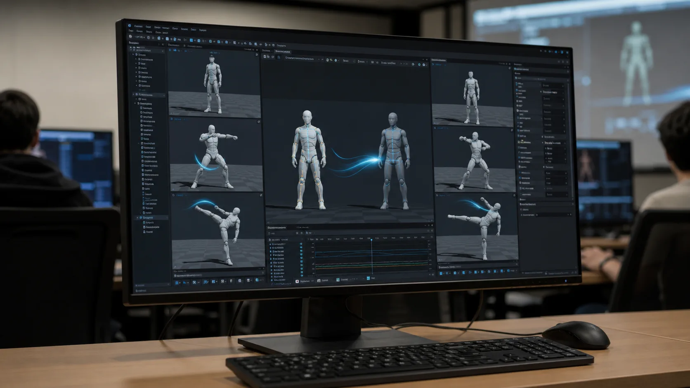
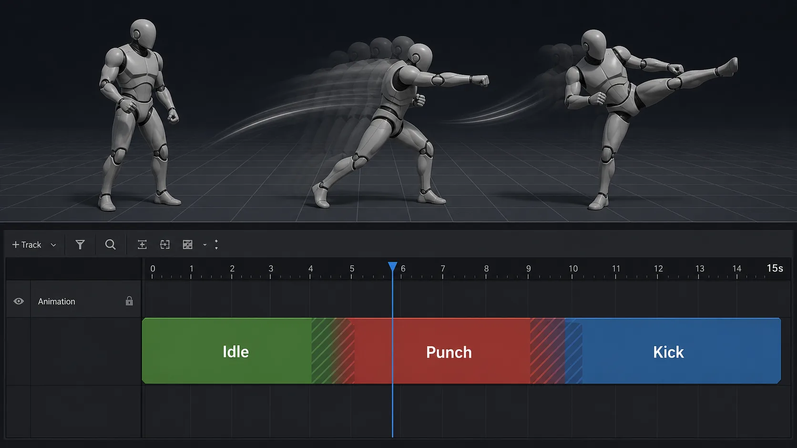

10주차 3교시 — 다양한 Mixamo 격투 모션 리타겟 + Level Sequence 실습 (학생용)
관련 문서
| 관계 | 문서 |
|---|---|
| 강의 계획서 | 강의계획서: Game Engine II |
| 강의 아웃라인 | 10주차 아웃라인: 애니메이션 리타겟팅 |
| 1교시 핸드아웃 | 1교시: 리타겟팅 개념 + Mixamo |
| 2교시 핸드아웃 | 2교시: Unreal Import + IK Rig |
- 본인 시네마틱 컨셉에 맞는 Mixamo 격투 모션 3종 이상을 ThirdPerson Mannequin으로 변환할 수 있다
- 같은 RTG 에셋으로 여러 동작을 다중 Export하여 “매핑 1번, 변환 N번”의 가치를 체감할 수 있다
- Level Sequence에 격투 흐름을 이어붙여 10–15초 영상으로 캡처하고 LMS에 제출할 수 있다
3교시는 본인 손으로 끝까지 한 사이클을 완주하는 실습이며, 오늘 동작 선택은 자유가 아니라 11주차 시네마틱인 격투씬 컨셉에 맞추고, 11주차 카메라 워크를 격투 장면에 적용할 예정이므로 오늘은 그 격투씬에 사용할 격투 모션 라이브러리 를 미리 본인 캐릭터에 입혀놓는 시간입니다.
Mixamo 에서 격투 관련 모션 3종 이상 (예: Fighting Idle / Punch / Kick / Block / Dodge 등) 을 ThirdPerson Mannequin 으로 변환하고, Level Sequence 에 이어붙여 10–15초 격투 시퀀스 로 캡처 제출. 결과물은 11주차에 카메라 워크 적용 대상으로 그대로 재사용.
핵심 원칙:
- 셋업은 한 번 (2교시에서 IK Rig 2개 + RTG 1개 이미 만들었음)
- 변환은 N번 (RTG 에셋 1개로 격투 모션 N개 모두)
- 격투씬 다양성 (정지 자세 / 공격 / 방어 또는 회피 — 최소 이 3 카테고리)

IK Retargeter 의 실질적으로 가치는 '매핑 한 번, 변환 N번' 이므로, 1개만 변환할 거라면 굳이 IK Rig 를 만들 필요가 없고 3개 이상 만들어봐야 'RTG 에셋 1개로 라이브러리 전체를 변환할 수 있는' 감각이 잡힙니다.
11주차 격투씬에 사용할 에셋이므로 격투 흐름이 자연스러워야 하며, 정지 자세 → 공격 → 다시 자세 잡기, 또는 공격 → 방어 → 반격 같은 격투 시퀀스 구성을 머릿속에 그려두고 동작을 선택합니다.
1. 본인 에셋 점검
실습에 들어가기 전 본인 Content Browser 의 Mixamo 폴더를 한 번 확인하고, 다음 8개 에셋이 모두 갖춰져 있는지 점검합니다.
| # | 에셋 | 종류 | 2교시에서 만든 것 |
|---|---|---|---|
| 1 | SM_Mixamo | Skeletal Mesh | 캐릭터 본체 |
| 2 | SK_Mixamo | Skeleton | Mixamo 본 |
| 3 | PA_Mixamo | Physics Asset | 예 |
| 4 | AS_Walking_Mixamo | Animation Sequence (소스) | Mixamo Walking |
| 5 | IK_Mixamo | IK Rig (소스) | chain 6개 |
| 6 | IK_Mannequin | IK Rig (타깃) | chain 6개 |
| 7 | RTG_MixamoToMannequin | IK Retargeter | Source/Target/Edit Pose 완료 |
| 8 | AS_Walking_Mannequin | Animation Sequence (변환 결과) | Walking 변환본 |
빠진 에셋이 있으면 손을 들어 수업용 백업본을 받고, 8개가 모두 갖춰진 학생부터 다음 단계를 시작합니다.
사전 환경 준비
- 브라우저에서 mixamo.com → Animations 탭 새 탭 열기
- Unreal 프로젝트 — Mixamo 폴더 열린 상태로 대기
- Cinematics 폴더 생성 — Content 우클릭 → New Folder → 이름
Cinematics(Level Sequence 에셋 저장용)
2. 에셋 수급 — Mixamo 격투 모션 3개 다운로드
2.1 격투 모션 추천
Mixamo 에는 격투 모션이 매우 많으므로, 핵심 검색어와 안전한 기본 셋을 짚어봅니다.
추천 검색어 (Animations 탭에서 검색):
| 검색어 | 카테고리 | 결과 예시 |
|---|---|---|
fighting idle | 격투 자세 | Fighting Idle / Boxing Idle / Combat Idle |
punch / punching | 펀치 계열 | Cross Punch / Hook Punch / Jab Cross / Punching Bag |
kick / kicking | 킥 계열 | Roundhouse Kick / Front Kick / Mma Kick / Kick |
block / dodge | 방어·회피 | Block / Dodge Forward / Dodge Backward |
combo / mma | 복합 동작 | Mma Combo / Boxing Combo |
hit / react | 피격 반응 | Hit Reaction / Stunned / Knockdown |
| 추천 셋 | 흐름 | 이유 |
|---|---|---|
| Fighting Idle + Cross Punch + Roundhouse Kick | 자세 → 펀치 → 킥 | 격투 기본 흐름. 정적·상체·하체 골고루 / 리타겟 안정성 |
| Boxing Idle + Jab Cross + Hook Punch | 자세 → 잽 → 훅 | 복싱 컨셉. 빠른 펀치 콤보 |
| Mma Idle + Punch + Block | 자세 → 공격 → 방어 | 공격·방어 균형. 격투 대결 시퀀스 적합 |
컨셉별 추천 (격투 안에서 본인 톤 선택):
| 컨셉 | 추천 3종 |
|---|---|
| 정통 복싱 | Boxing Idle / Jab Cross / Hook Punch |
| MMA / 종합격투 | Fighting Idle / Roundhouse Kick / Punch |
| 무술·쿵푸 | Martial Arts Idle / Kick / Block |
| 거리 싸움 | Combat Idle / Hit Reaction / Punch |
| 2인 대결 (보너스) | Fighting Idle + Punch + Hit Reaction (피격 캐릭터용) |
마지막 행은 보너스 항목이며, 시간 여유 있는 학생은 2인 대결 시뮬레이션 도 시도할 수 있고, 캐릭터 한 명에 공격 모션을 입히고 다른 한 명(같은 SK_Mannequin 복제)에 Hit Reaction 을 입히면 11주차에 두 캐릭터를 카메라로 번갈아 비추는 격투 컷 구성이 가능합니다.
2.2 격투 모션 3개 차례로 다운로드
1교시 다운로드 절차를 그대로 3번 반복하며, 모든 동작은 Without Skin / FBX Binary / In Place 옵션으로 받습니다.
각 동작에 대해:
- Animations 탭에서 격투 검색어 입력 (예:
fighting idle,punch,kick) - 결과 클릭 → 우측 미리보기 재생 — 격투 동작이 명확하고 짧은 것 우선
- 마음에 들면 우상단 Download 클릭
- Skin: Without Skin / Format: FBX Binary / FPS: 30 / KeyReduction: none
- In Place 처리 — 동작 종류에 따라 갈림:
- 제자리 격투 동작 (Fighting Idle / Cross Punch / Roundhouse Kick 등 대다수) — In Place 옵션이 회색 또는 무관 (정상)
- 이동 격투 동작 (Walking Forward Combo / Step Kick / Dodge Forward 등) — In Place 활성화 권장. 그대로 받으면 변환 후 캐릭터가 시퀀서에서 의도하지 않은 거리만큼 이동할 수 있음
- Download 실행
첫 시도는 제자리 동작 위주로 진행합니다 (root/pelvis 변동이 적어 변환이 안정적). 이동 격투 동작은 4-5번째 보너스 동작으로 도전합니다.
5분 안에 동작을 정하지 못하면 손을 들어 수업용 안전 세트 (Fighting Idle / Cross Punch / Roundhouse Kick FBX 3종) 를 받고 다음 단계에 합류합니다.
Animations 탭에서
fighting idle,punch,kick,block,dodge같은 검색어로 격투 동작을 찾습니다.
다운로드 폴더 점검
- 다운로드 폴더에 FBX 3개 (예:
Fighting Idle.fbx,Cross Punch.fbx,Roundhouse Kick.fbx) - 파일 크기가 수십~수백 KB 정도면 대체로 정상이며, 0KB 이거나 50KB 보다 훨씬 작으면 다시 다운로드하고 5MB 를 넘으면 With Skin 으로 받은 것은 아닌지 확인
다운로드 폴더에는 격투 모션 FBX 3개 이상이 차례로 쌓여 있어야 합니다.
동작을 더 받고 싶은 학생은 4-5개를 받아도 되며, 11주차 격투씬에서 더 풍부한 컷을 구성할 수 있지만 먼저 3개로 한 사이클을 완주한 후에 추가합니다.
3. 셋업 재확인 + 다중 Import
3.1 다중 FBX import
이번에는 한 번에 여러 FBX 를 import 하며, Unreal 은 다중 드래그를 지원합니다.
윈도우 탐색기에서 FBX 3개 선택 + 드래그
- Ctrl+클릭 또는 Shift+클릭으로 3개 선택
- 함께 Unreal Content Browser 의 Mixamo 폴더로 드래그앤드롭
여러 FBX는 탐색기/Finder에서 Ctrl/Shift로 선택한 뒤 Mixamo 폴더로 한 번에 드래그할 수 있습니다.
FBX Import Options (각 파일마다 또는 일괄)
다이얼로그가 파일별로 또는 한 번에 뜨며, 모두 같은 옵션을 사용합니다:
| 옵션 | 설정값 |
|---|---|
| Skeleton | SK_Mixamo 지정 필요 |
| Mesh > Import Mesh | (애니메이션만이라 메시 불필요) |
| Animation > Import Animations | 예 |
| Animation Length | Exported Time |
Apply To All 옵션이 있으면 활용합니다 — 한 번 설정하면 나머지 파일에도 같은 옵션이 적용됩니다.
Import All + 결과 확인
- 모든 다이얼로그에서 Import All 클릭
- Mixamo 폴더에 새 에셋 추가됨:
- AS_Idle_Mixamo (또는 import 시 이름이 Idle 로 들어왔으면 이름 변경)
- AS_Walking_Mixamo (이미 2교시에서 import 했으면 덮어쓰기 X — 새 이름 또는 skip)
- AS_Boxing_Mixamo
import 후 Mixamo 폴더에
AS_*_Mixamo에셋이 3개 이상 추가되었는지 확인합니다.
이름 변경
각 에셋 F2 → AS_<동작명>_Mixamo (예: AS_Idle_Mixamo, AS_Boxing_Mixamo)
여기까지 import 단계가 끝났고, 이제 RTG 에셋을 다시 열고 N번 변환할 차례입니다.
| 증상 | 원인 | 해결 |
|---|---|---|
| 다이얼로그가 파일마다 뜨고 매번 옵션 다시 설정해야 함 | Apply To All 옵션 미사용 | 첫 다이얼로그에서 옵션 설정 후 Apply To All 체크 |
일부 import 가 새 <동작명>_Skeleton 에셋을 만듦 | Skeleton 옵션 None 으로 둠 | 잘못 생성된 Skeleton/AS 에셋 삭제, Skeleton: SK_Mixamo 지정 후 재import |
Skeleton bone count mismatch 경고 | 선택한 Skeleton 과 FBX 안의 본 구조가 맞지 않음 | import 취소 후 Skeleton: SK_Mixamo 지정 여부와 FBX 파일을 다시 확인 |
| 같은 이름의 AS 가 이미 있어 import 가 막힘 | 2교시에서 만든 AS_Walking_Mixamo 와 충돌 | 새 파일명 prefix 추가 (예: Walking_v2.fbx) 또는 기존 에셋 덮어쓰기 |
4. 배치 변환 — RTG 에셋 1개로 N번
2교시에서 만든 RTG 에셋 하나로 새로 받은 동작 N개를 한 번에 변환하는 것이 IK Retargeter 의 실질적으로 가치 — 매핑 1번, 변환 N번입니다.

4.1 RTG 에서 다중 Export
RTG_MixamoToMannequin 열기
- Mixamo 폴더의 RTG_MixamoToMannequin 더블클릭
- 에디터가 열립니다 (Source/Target preview, Chain Mapping 이 그대로 유지됨)
Asset Browser 에서 다중 선택
- 우측 Asset Browser 패널에 SK_Mixamo skeleton 의 모든 AS 목록이 표시됨
- Ctrl+클릭 으로 변환할 AS 여러 개 선택 (AS_Idle_Mixamo, AS_Walking_Mixamo, AS_Boxing_Mixamo)
- 또는 Shift+클릭으로 범위 선택
RTG의 Asset Browser에서 Ctrl+클릭으로 변환할 AS 여러 개를 선택합니다.
다중 Export Selected Animations
- 선택된 AS 묶음 우클릭 → Export Selected Animations
- 다이얼로그 → 저장 폴더(Mixamo) + 파일명 prefix 또는 suffix (예:
_Mannequin) - Export 클릭
Export 다이얼로그에서 저장 폴더와 suffix
_Mannequin을 확인한 뒤 Export를 실행합니다.
다이얼로그의 Prefix/Suffix 로 변환 결과 이름이 자동 생성되며, 예를 들어 suffix 를 _Mannequin 으로 지정하면 AS_Idle_Mixamo → AS_Idle_Mixamo_Mannequin 이 되므로 짧게 _Mannequin 만 붙이거나, 이름 변경으로 직접 정리합니다.
결과 확인 + 이름 변경
- Mixamo 폴더에 변환된 AS 가 N개 생김
- 각각 더블클릭 → SK_Mannequin 캐릭터에서 재생 확인
- 각 에셋 F2 →
AS_<동작명>_Mannequin(예: AS_Idle_Mannequin, AS_Boxing_Mannequin)
변환 후 Mixamo 폴더에
AS_*_Mannequin에셋이 3개 이상 생겼는지 확인합니다.
- [ ] Skeleton 이 SK_Mannequin 인가? (Details 패널 확인)
- [ ] 길이·프레임 수가 원본 AS_*_Mixamo 와 일치하는가?
- [ ] 발이 땅에 자연스럽게 닿고 사지가 정상인가?
RTG 에셋 하나만 있으면 Mixamo 의 어떤 인간형 동작도 같은 방식으로 Mannequin 에 입힐 수 있으며, Mixamo 라이브러리 전체가 본인 캐릭터의 동작 풀로 활용 가능 해집니다.
| 증상 | 원인 | 해결 |
|---|---|---|
| 한 동작은 정상인데 다른 게 누워있음 | 그 동작 자체의 Pelvis 가 평소와 크게 다름 (Lying / Crawling 등) | 동작 자체 한계 — 다른 동작으로 교체 또는 Target Root Settings 보정 |
| Idle 만 변환했는데 캐릭터가 안 움직임 | Idle 은 정적 동작이라 정상 | Walking 등 이동 동작 추가로 다양성 확인 |
| 변환 후 발이 땅 아래로 내려감 | Mannequin pelvis 높이 < Mixamo pelvis 높이 | RTG > Target Root Settings > Translation Scale 조정 |
| 일부 AS 가 변환 안 됨 (Asset Browser 에 안 보임) | 해당 AS 가 SK_Mixamo 가 아닌 다른 skeleton 에 속함 | 잘못 import 된 AS — Skeleton 재지정 또는 재import |
| 변환 결과 길이가 원본 절반 | Frame Range 옵션 잘못 | Export 다이얼로그의 Frame Range 확인 |
5. Level Sequence 이어붙이기
5.1 Level Sequence 만들기 + 캐릭터 바인딩
이제 변환된 동작 N개를 시간축에 이어붙이는 단계이며, 9주차에 다룬 Level Sequence 가 다시 등장합니다.

Level Sequence 는 현재 열려있는 레벨 의 액터를 대상으로 동작하므로, 모두 ThirdPerson 템플릿 기본 레벨 (Map_ThirdPersonExampleMap) 또는 Maps/Basic 빈 레벨 에서 진행하고, 11주차에 같은 레벨 + 같은 LS 위에 카메라가 얹히므로 일관된 레벨 환경이 11주차 작업의 전제입니다.
Level Sequence 에셋 생성
- Cinematics 폴더 우클릭 → Cinematics > Level Sequence
- 이름: LS_RetargetDemo (또는 본인 이름)
Cinematics 폴더에서 우클릭 후 Cinematics > Level Sequence를 선택해
LS_RetargetDemo를 만듭니다.
Level Sequence 더블클릭으로 에디터 열기
새 Level Sequence를 열면 빈 트랙 영역이 보이며, 먼저 캐릭터 액터를 바인딩합니다.
Mannequin 캐릭터를 시퀀서에 바인딩 (UE 5.7 정확 경로)
- Outliner 또는 viewport 에서 캐릭터 액터 선택 — ThirdPerson 의 BP_ThirdPersonCharacter 또는 SKM_Manny / SKM_Quinn
- 시퀀서 상단의
+ Add(Add Track) 버튼 클릭 - 메뉴:
Actor to Sequencer>Add 'SKM_Manny'(또는 선택한 액터 이름이 노출됨) - 시퀀서에 캐릭터 바인딩(Object Binding) 트랙 생성
Outliner에서 캐릭터 액터를 먼저 선택한 뒤 시퀀서 Add Track > Actor to Sequencer 메뉴로 추가합니다.
시퀀서 빈 공간에서 우클릭하거나 루트 '+ Track' 메뉴를 사용하면 일반 트랙들이 노출되어 헤매기 쉽습니다. 이 순서로 (1) 액터 먼저 선택 → (2) Add Track → (3) Actor to Sequencer 메뉴 순서로 진입합니다.
5.2 Animation 트랙으로 격투 동작 이어붙이기
Animation 트랙 추가 + 첫 AS 클립
- 방금 추가된 캐릭터 바인딩 트랙(SKM_Manny) 옆
+ Track또는 트랙 라벨 우클릭 Animation선택 → Animation 트랙 자식 트랙 생성- Animation 트랙의
+ Add Animation(또는 트랙 비어있는 부분 우클릭 → Add Animation) → 변환된 AS 목록 표시 - 첫 AS 선택 (예: AS_FightingIdle_Mannequin)
- 트랙에 클립(Section)이 시간 0 부터 추가됨
캐릭터 바인딩 아래 Animation 트랙을 추가하고,
AS_*_Mannequin클립을 넣습니다.
두 번째·세 번째 AS 이어붙이기
- Animation 트랙 빈 공간 우클릭 →
Add Animation→ 두 번째 AS 선택 (예: AS_CrossPunch_Mannequin) - 클립이 추가되면 드래그해서 첫 클립 끝 위치로 이동
- 같은 방법으로 세 번째 AS (예: AS_RoundhouseKick_Mannequin) 추가
또는 Content Browser 에서 AS 를 직접 Animation 트랙으로 드래그 — 더 빠른 방식입니다.
격투 AS 클립 3개를 시간순으로 붙이고, 필요하면 4-8프레임 정도 겹쳐 전환을 부드럽게 만듭니다.
트랜지션 만들기 (4–8프레임 겹침)
동작 사이가 갑자기 끊기는 느낌이 들면, 다음 클립의 시작점을 앞 클립 끝과 4–8프레임 정도 겹치게 옮겨 짧은 트랜지션 (Blend In/Out) 처럼 사용하며 깊은 Blend 설정은 11주차에서 다룹니다.
- 첫 클립의 오른쪽 끝을 살짝 안쪽으로 드래그하지 말고 다음 클립의 시작점이 첫 클립 끝과 4–8프레임 겹치도록 두 번째 클립을 왼쪽으로 살짝 이동
- 겹친 구간에서 두 동작이 자동 블렌딩됨
길이 조정
각 AS 클립 양 끝 드래그:
- 짧게 자르려면: 클립 끝을 안쪽으로 드래그
- 길이 유지: 그대로
- 루프 (반복): 클립 끝을 바깥으로 드래그하면 같은 동작 자동 반복
총 길이 10–15초 가 되도록 각 클립 길이 조정.
재생 확인
- 시퀀서 상단 Play 버튼 또는 Space
- Mannequin 이 Fighting Idle → Punch → Kick (또는 본인 격투 흐름) 순서로 재생됨
이 격투 시퀀스가 11주차 카메라 워크의 입력 에셋이며, 같은 동작 흐름을 다양한 카메라 각도/컷으로 비추면서 카메라 기법(Camera Cut · 다중 카메라 · 레일/크레인) 을 배웁니다.
| 증상 | 원인 | 해결 |
|---|---|---|
| 캐릭터 트랙이 시퀀서에 추가 안 됨 | viewport 에서 액터 선택 안 됨 | Outliner 에서 액터 클릭 후 시퀀서 + Track 으로 드래그 |
| Animation 트랙에 AS 가 안 보임 | 캐릭터의 Skeleton 과 AS Skeleton 이 다름 | AS Skeleton = SK_Mannequin 인지 확인 (3점 검증 ①) |
| AS 클립 사이 캐릭터가 한순간 사라짐 | 클립 사이 빈 공간 | 클립을 끝과 시작점이 정확히 맞닿도록 배치 |
| AS 끝나면 캐릭터가 T-Pose 로 정지 | 마지막 클립 이후 트랙 끝까지 빈 공간 | 마지막 클립 끝을 시퀀서 끝까지 드래그 또는 시퀀서 길이 줄이기 |
| 캐릭터가 이상한 위치에서 Walking | In Place 옵션을 켜지 않은 동작 | 해당 AS 다시 다운로드 (In Place 체크) 또는 트랜스폼 트랙으로 위치 보정 |
6. 개별 피드백 + 캡처 제출
6.1 개별 피드백 (8분)
본인 시퀀서를 다듬는 시간입니다. 30명 기준 1명당 깊이 도울 수 있는 시간이 짧으니, 막힌 단계가 명확한 학생 (예: 'Animation 트랙이 안 보임') 부터 손을 들어주세요.
6.2 캡처 제출 (2분)
최종 결과물 캡처는 viewport 화면 녹화 를 우선으로 하며, 격투 흐름 10–15초를 그대로 보여줄 수 있어 흐름 확인에 가장 적합합니다.
우선 방식 — viewport 화면 녹화 (권장, 30초~1분)
- 시퀀서 에디터 또는 메인 viewport 에서 시퀀서 Play 준비
- OBS Studio / QuickTime (macOS) / Windows 게임바 (Win+G) 중 본인 환경에 맞는 화면 녹화 도구 실행
- viewport 영역만 녹화 시작 → 시퀀서 Play → 격투 시퀀스 끝까지 재생 → 녹화 종료
- 영상 파일 (mp4 / mov) 저장
백업 방식 — 스크린샷 (녹화 도구 안 되는 환경)
- 시퀀서 재생 중 인상적인 프레임 (펀치 임팩트 / 킥 동작 정점 등) 에서 정지
- Print Screen (Win) 또는 Cmd+Shift+4 (macOS) 로 viewport 캡처
- 이미지 저장
Movie Render Queue (MRQ) 라는 시퀀서 전용 고품질 렌더링 도구도 있는데, 플러그인 활성화·에디터 재시작·렌더 시간 등 절차가 길어 오늘은 안 다룹니다. 13주차 렌더링 수업에서 본격 다룰 예정.
최종 결과는 viewport 화면 녹화 또는 스크린샷으로 남기되, 가능하면 10-15초 영상으로 제출합니다.
제출 항목
| 제출물 | 형식 | 우선순위 |
|---|---|---|
| 격투 시퀀스 영상 | 화면 녹화 mp4 / mov, 10–15초 | LMS 업로드 — 주 제출물 |
| 스크린샷 (백업) | 영상 환경 안 될 때만 | LMS — 영상 대체 |
| Mixamo 폴더 스크린샷 (옵션) | Content Browser 캡처 | 8 + N개 에셋 자기점검용 |
완성 기준
오늘 실습 4는 다음 5개 항목으로 완성도를 확인합니다.
| # | 항목 | 확인 조건 |
|---|---|---|
| 1 | 격투 모션 3종 이상 import | SK_Mixamo skeleton 으로 격투 관련 AS 3개 이상 (정지 자세·공격·방어/킥 골고루면 우수 기준) |
| 2 | RTG 에셋으로 변환 N번 완료 | AS_*_Mannequin 3개 이상 (3점 검증 완료) |
| 3 | Level Sequence 에 격투 흐름 이어붙임 | 한 트랙에 클립 3개 이상 + 격투 흐름이 자연스러움 (자세→공격→방어 등) |
| 4 | 총 길이 10–15초 | 시퀀서 길이 적정 |
| 5 | 캡처 제출 | 스크린샷 또는 영상 |
5개 모두 확인되면 만점이며, 일부 누락은 부분 점수이고 8개 에셋 파일까지 모두 갖춘 학생은 보너스 점수가 부여됩니다.
11주차 예고
IK Rig 매핑은 한 번, 변환은 N번. Mixamo 의 격투 라이브러리가 본인 캐릭터의 동작 풀이 되었다.
11주차는 시퀀서 카메라 워크 이며, 일반 시퀀서 카메라 기법 — Camera Cut 트랙, 다중 카메라 전환, 카메라 레일/크레인을 활용한 역동적 무빙, 액터 트랜스폼 트랙 심화 를 오늘 만든 격투씬 예제로 배우고, 같은 격투 동작도 카메라 위치·각도·컷에 따라 완전히 다른 인상으로 표현된다는 점을 확인한 뒤 펀치 직전의 클로즈업, 킥 임팩트의 측면 와이드, 정지 자세의 부감 같은 컷을 직접 구성해보면서 카메라 워크 기법을 익히고 실습 4 — 시네 카메라 + 다중 카메라 워크 시네마틱 이 11주차에 시작됩니다.
오늘 만든 격투 시퀀스와 Mixamo 폴더의 AS_*_Mannequin 에셋을 잘 보관 해야 하며, 11주차에 이 에셋 위에 카메라가 얹히므로 본인 프로젝트 백업과 LMS 제출을 모두 챙겨주세요.